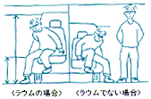
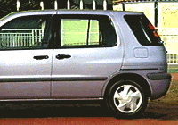

|
| どなたにも乗り降りしやすく。 ●キュークツにさよならする、3大工夫。 クルマに乗り降りするとき、足をうんと上げたり、頭をおもいきり下げたりしないですむようにしたい。というわけでラウムは、(1)家でいうところの敷居と床の段差を小さくし(2)天井を高くして、間口を広げ(3)シートの座面を高くしました。体の前後上下の動きが少なくなって、とても乗り降りしやすくなっています。 |
 |
|
スライドドアでラクに、使いやすく。 ●便利に使える。スルスル開く。 人が立てるスペースがあれば乗り降りラクラク。狭い駐車場などで大活躍です。しかもこのスライドドアの軽さは、引き戸感覚。どなたにも簡単に開け閉めできます。 ●安全への気配りもいろいろ。 坂道などでドアが勝手に閉まらない＜ドアオープンロック機構＞、ガソリン給油口の開口時には左側スライドドアが開かない＜フューエルインターロック機構＞など細かい配慮がされています。 |
 |
使う頻度を考えてバックドアは横開きに。 ●後ろが狭くても、これなら便利。 はね上げ式がドア後方に人の立てるスペースが必要なのに対し、スウィングドアは横から開けられるため、後ろが狭くても荷物の出し入れが簡単。タワーパーキングや屋根の低い駐車場で開閉できるのも魅力です。 |
 |
| | MAIN | NAVI | |